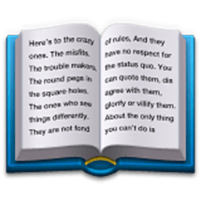
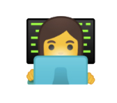

Programmers track the success of computer languages the way other people track sports rankings, commenting on Web forums such as Reddit. There are hundreds of programming blogs. Many large corporations let their engineers blog. Discussions about programming go on everywhere, in public, at all times, about hundreds of languages. There is a keen sense of what’s coming up and what’s fading out.
If you code, by the time a language breaks through to the top 10 or 20, you’ve heard of it, read blog posts about it, heard people lament how terrible or wonderful or misguided it is, possibly watched a few video tutorials, or played with it a little. Taking new languages out for a spin is a good thing for a programmer to do. Often all you have to do is download some files and write a couple lines of code, then decide if you want to go further. Most languages are free to download and use.
To have produced a successful language is acknowledged as a monumental effort, akin to publishing a multivolume history of a war, or fighting in one. The reward is glory. Changing a language is like fighting that war all over again, and some languages have at times been trapped in a liminal state between their old, busted selves, and their new, promised version.
Making a new language is hard. Making a popular language is much harder still and requires the smile of fortune. And changing the way a popular language works appears to be one of the most difficult things humans can do, requiring years of coordination to make the standards align.
Languages are large, complex, dynamic expressions of human culture.
Programmers'career depends on demonstrating capacity in one or more computer languages.
The creation of a good computer language is the work of an apex programmer.
5
Look How Big and Weird Things Get With Just Python
4
The Corporate Object Revolution
3
The Importance of C
2
What
Do Different Languages Do?
1
The Beauty of the Standard Library
R
E
A
D
M
O
R
E
Java
C
C++
Objective-C
C#
JavaScript
PHP
Python


The true measure of a language isn’t how it uses semicolons; it’s the standard library of each language. A language is software for making software. The standard library is a set of premade software that you can reuse and reapply.
Take Python, which is “batteries included,” meaning that it comes with tons of preexisting code, organized into “modules,” that you can reuse. Its standard library has functions that let you copy Web pages or replace words in a document.
What does that mean, to process text? Well, you might have a string of text (The Quick Brown Fox) and save it in a variable called my_string. So now you can call standard methods on that string. You can say my_string.lower(), and it will make all the words lowercase, producing “the quick brown fox.”
Truly understanding a language’s standard library is one of the ways one becomes proficient in that language. Typically you just visit Web pages or read a book.But the standard library is only the beginning. For many languages—there’s an enormous library of prewritten modules available for nearly instantaneous download, using “package manager” software. A module (or library, or package) is code that is intended to extend a language’s capabilities.
Let’s say you work for an advertising agency and need to process through 100,000 pictures and scale and sharpen them.You type one command: sudo pip install Pillow, and the Pillow module is downloaded, compiled automatically, and placed into the correct directory for later reuse. You have to know, of course, that most modern languages have modules for image processing; you also need to know that Pillow is the most commonly used image-processing toolkit. Knowing how to find that out is part of the job of coding. You might learn it by Googling. You might ask a friend. You might get that information out of a book, or a website like The Hitchhiker’s Guide to Python.
But what a payoff! Now that Pillow is installed, you have, at your typing fingertips, dozens of routines and functions related to image processing that you can use in your code: change colors, rotate by a number of degrees, scale, convert GIF images to JPEGs, and so forth.Or if you need to do very complex numerical analysis and statistics work, you can download NumPy, and suddenly an enormous range of mathematical algorithms are available to you, hundreds of years of science and research boiled down. Audio processing, interacting with peculiar hardware, speaking to databases—there are packages for all of these things.
Code isn’t just obscure commands in a file. It requires you to have a map in your head, to know where the good libraries, the best documentation, and the most helpful message boards are located. If you don’t know where those things are, you will spend all of your time searching, instead of building cool new things.